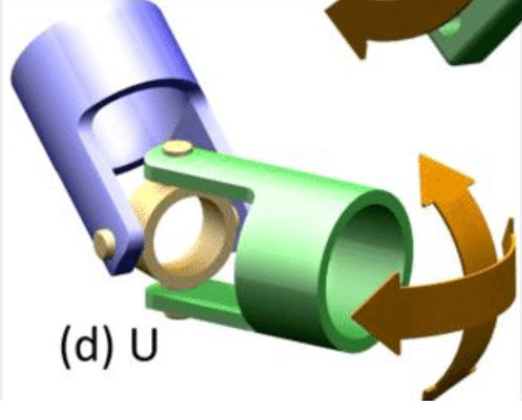
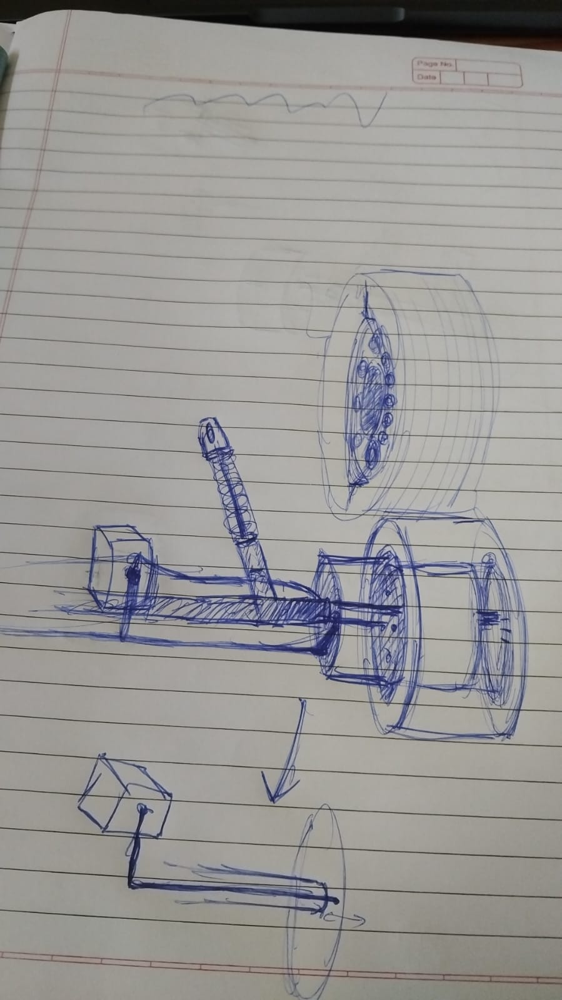
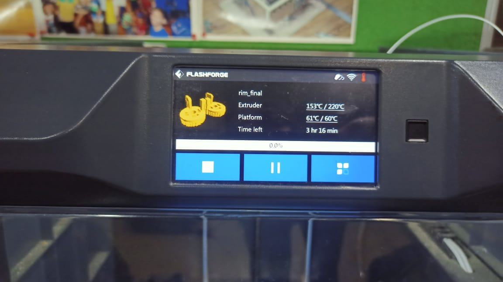

Event Gallery

Universal Joint Example
We used this and various animations to brainstorm the implementation of our hybrid steering.
3D Printing Rim - A New Hope
A first attempt at 3D printing the rim of the vehicle wheels to implement hybrid steering.

Steering Design Ideas
Narendra discussed multiple hybrid steering design ideas including a suspension system.

3D Printing Rim - The Steering Strikes Back
Another (and hopelessly enthusiastic, as is evident from the file name) attempt at 3D printing the rim.
Basic Prototypical Circuit Diagram
The circuit diagram of the car for first prototype. Unfortunately stopped working just before the event.
Math behind the steering - 1
Math for finding the four individual radii of curvature from the derived radius for the center of car. Then velocities are calculated, such that atleast one is at max torque.
Basic Prototypical Circuit Diagram
The circuit diagram of the car for first prototype. Unfortunately stopped working just before the event.
Breakout Sessions
Attendees participating in various workshops and breakout sessions.